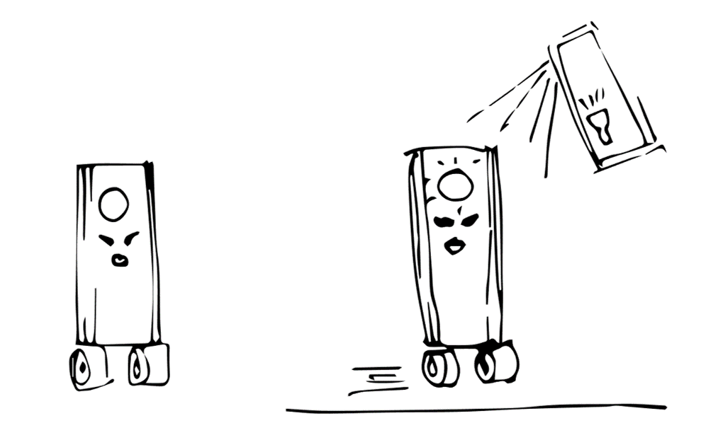

CREATING A CHARACTER WITH A THIRD EYE
THE IDEA: BASIC ARDUINO TO START LEARNING
GENERATE A CIRCUITE WITH ONE LED, ONE PHOTOSENSOR AND A MOTOR
This is a project that I am working with Emilio, and what we want to develop is an artifact, in this case an aluminiun can (because of its light, but probably it can be changed according with our projects) and make it move if it receive extra light from your lamp cellphone. And if we have time to respond with a message. But step by step.
THE LOGIC
THIS IS RELATED OF WHAT WE HAD IN STOCK

THE ELECTRONICS PART

KICAD
UNDERSTAND HOW TO MAKE THE PCB
The idea is to design a PCB board this a specific shape to the robot.

WORKING PROGRESS